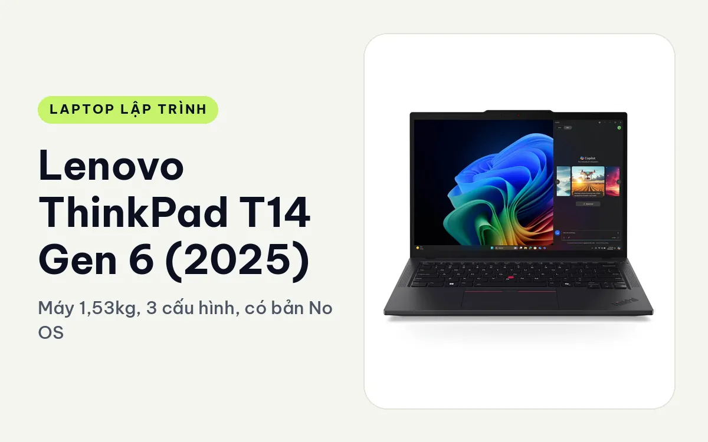
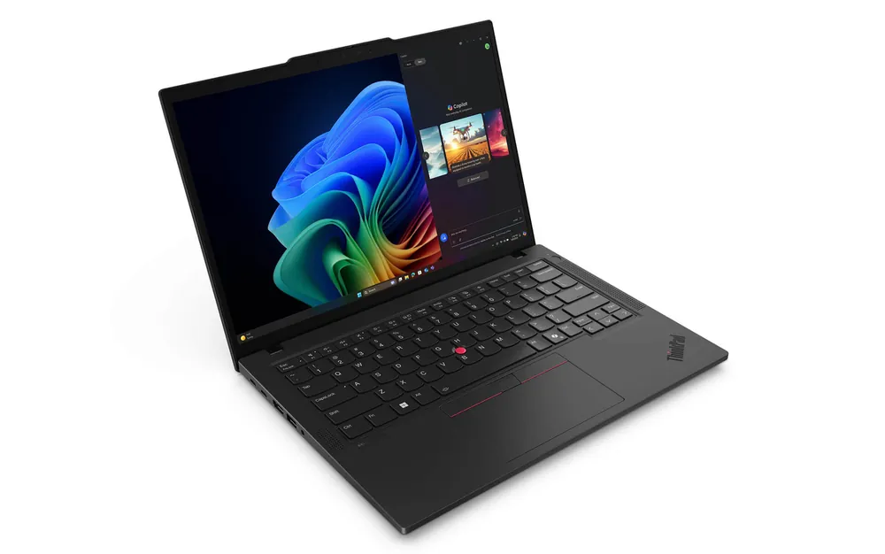
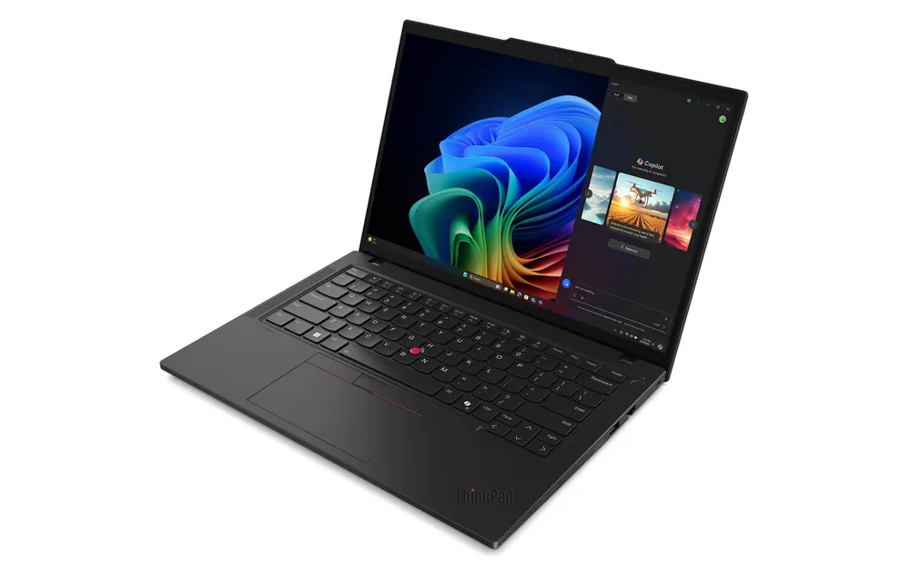
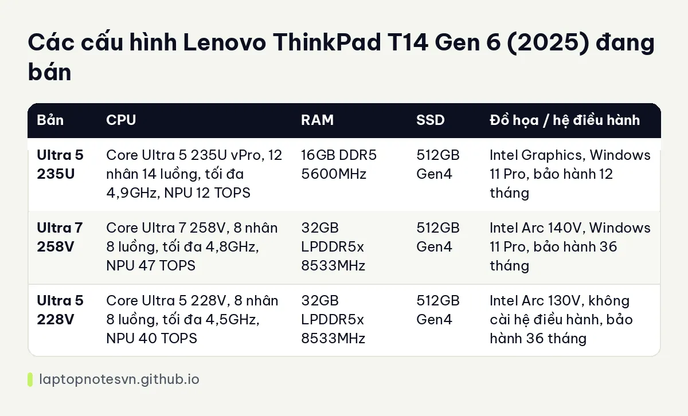

Lenovo ThinkPad T14 Gen 6 (2025) cho lập trình - Máy 1,53kg, 3 cấu hình, có bản No OS

Lenovo ThinkPad T14 Gen 6 (2025) là đời T14 trước của năm nay, vẫn đang bán và có điểm hấp dẫn riêng: ba cấu hình khác nhau khá nhiều, từ bản 16GB RAM thông thường đến bản 32GB kèm đồ họa Arc và bảo hành dài hơn. Trong ba bản còn có một bản trống hệ điều hành, tiện cho ai muốn cài Linux ngay.
Bài này nhìn máy từ chuyện chọn đúng bản: cùng một tên máy nhưng người code web nhẹ và người chạy nhiều container nên chọn khác nhau.
Thiết kế
Thân máy 14 inch với kích thước 315,9 x 223,7 mm, độ dày từ 10,9 mm đến 16,13 mm, vỏ kim loại tái chế phủ nhám chống bám vân tay. Máy đạt chuẩn MIL-STD-810H. Viền màn hình mỏng, các góc bo mềm hơn dòng ThinkPad cũ.

Màn hình ở cả ba bản là IPS WUXGA 1920 x 1200, tỉ lệ 16:10, 400 nits, chống chói, có lớp Eyesafe và chứng nhận giảm ánh sáng xanh. Tỉ lệ 16:10 cho thêm vài dòng code mỗi màn so với 16:9, và đó là điểm dễ nhận ra khi đọc file dài.
Cổng kết nối gồm 2 USB-C Thunderbolt 4 (40Gbps), 2 USB-A 5Gbps với một cổng luôn cấp điện, HDMI 2.1 xuất 4K 60Hz và jack tai nghe. Hãng còn liệt kê Ethernet RJ45, Nano SIM và đầu đọc thẻ thông minh là tùy chọn theo cấu hình. Máy hỗ trợ Wi-Fi 7. Bàn phím giữ kiểu ThinkPad kèm TrackPoint.
Mang đi hằng ngày
Máy nặng 1,53 kg, nặng hơn đời Gen 7 một chút nhưng vẫn là mức mang đi làm mỗi ngày không thấy vướng. Trang mô tả ghi thời lượng pin tới 12 giờ và sạc nhanh đạt 80% sau 30 phút. Phần hỏi đáp trên trang sản phẩm nêu pin khoảng 52,5Wh và thời gian dùng thực tế 9 đến 12 giờ với việc văn phòng, lập trình, độ sáng 50%.

Hãng cũng cho biết máy hỗ trợ cài Ubuntu và Fedora với driver Wi-Fi, âm thanh, camera chạy ổn. Với người code chạy Linux native thì đó là thông tin cần thiết hơn bất cứ con số pin nào.
Có mấy cấu hình
Có 3 cấu hình. Điểm cần nhìn là RAM, chip và bảo hành, vì ba thứ này khác hẳn nhau giữa các bản.

| Bản | CPU | RAM | SSD | Đồ họa / hệ điều hành |
|---|---|---|---|---|
| Ultra 5 235U | Core Ultra 5 235U vPro, 12 nhân 14 luồng, tối đa 4,9GHz, NPU 12 TOPS | 16GB DDR5 5600MHz | 512GB Gen4 | Intel Graphics, Windows 11 Pro, bảo hành 12 tháng |
| Ultra 7 258V | Core Ultra 7 258V, 8 nhân 8 luồng, tối đa 4,8GHz, NPU 47 TOPS | 32GB LPDDR5x 8533MHz | 512GB Gen4 | Intel Arc 140V, Windows 11 Pro, bảo hành 36 tháng |
| Ultra 5 228V | Core Ultra 5 228V, 8 nhân 8 luồng, tối đa 4,5GHz, NPU 40 TOPS | 32GB LPDDR5x 8533MHz | 512GB Gen4 | Intel Arc 130V, không cài hệ điều hành, bảo hành 36 tháng |
Bản Core Ultra 5 235U, 16GB
Chip dòng U tiết kiệm điện, 12 nhân 14 luồng. Bản này hợp học code, làm web frontend, viết script, chạy một database nhẹ và vài tab tài liệu. Dung lượng 16GB là mức vừa đủ cho một IDE kèm trình duyệt, nhưng nếu thêm Docker nhiều container thì nhanh chạm trần.
Đây là bản rẻ nhất nên hợp sinh viên và người mới vào nghề. Người định chạy máy ảo hoặc Kubernetes cục bộ nên chọn hai bản 32GB.
Bản Core Ultra 7 258V, 32GB
Bản này mạnh nhất về RAM và đồ họa: Arc 140V cho tốc độ tốt hơn hẳn đồ họa tích hợp cũ khi mở nhiều cửa sổ, kéo màn hình ngoài, chạy trình giả lập. Bảo hành 36 tháng cũng nghiêng hẳn về phía người dùng lâu dài.
Với 32GB LPDDR5x, anh chị chạy được backend nhiều service, Docker compose khá lớn và Android emulator mà không phải tắt bớt trình duyệt. RAM đây là loại tốc độ cao, hàn liền, nên hãy tính đủ từ đầu.
Bản Core Ultra 5 228V, không cài hệ điều hành
Cùng 32GB RAM và 512GB SSD, chỉ khác chip thấp hơn một bậc, đồ họa Arc 130V và không kèm Windows. Nếu anh chị định cài Linux hoặc có sẵn bản quyền riêng thì bản này đỡ phải gỡ Windows.
Đây là bản hợp nhất cho dân backend, DevOps và học viên dùng Ubuntu hay Fedora. Chip vẫn 8 nhân, đủ cho compile vừa phải.
Nên chọn bản nào
Chọn bản 258V nếu cần máy chính cho công việc nhiều container và muốn bảo hành dài. Chọn 228V nếu dùng Linux và cần 32GB RAM. Còn 235U chỉ hợp ngân sách hạn chế, nhu cầu nhẹ.
Anh chị cân nhắc máy mới hơn thì xem ThinkPad T14 Gen 7 cho lập trình, nơi RAM thay được. Còn việc 16GB hay 32GB, hãy đọc lập trình viên cần bao nhiêu RAM trước khi chốt.
Đăng ngày 08/11/2026